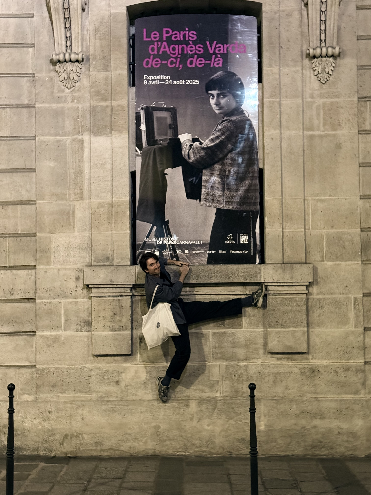

Writer & person
Johnathan Lovett
A writer and person based in Brooklyn.
Writing
-
My Weekends in New York
On Saturdays I go to this gym on Fifth and pay these two Israeli guys to beat the living shit out of me.
2026 -
Supermarket in Santa Monica
National Anthology of the Best Undergraduate Writing.
2019 -
Review of Machupicchu ii
The seaside city of Callao is home to Peru's principal seaport and main airport, and, for a time, it was where mules trekked from over the Andes to deliver goods.
2019 -
Review of Chengdu Taste
Entering Chengdu Taste is less like visiting a restaurant and more like stepping into a home.
2019
Other projects
02
TV Pilot
Jay, a former piano prodigy, is thrust into an underground NYC organ-harvesting ring. Co-creator: James Han.
Read more ↗04
Chronopoem
A generative clock transposing minutes into shifting, 8-line verse. Every six minutes, timestamp info. informs the text and its movement.
Learn more ↗About
Johnathan is a writer and person based in Brooklyn. He is working on a novel, which has received support from Tin House.
He loves the Talking Heads, penguins, cinnamon rolls. He really loves the Talking Heads.
Fin.
Contact
For correspondence, commiseration, commission, or conversation: